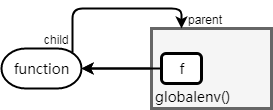
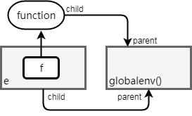

2017-08-02 20:40:03
作用域: 一组程序规则，定义识别符号(identifier)和实体(entity)之间的绑定(binding，即名-实映射)。作用域决定了R如何查找一个符号的值。
名称覆盖 (name masking)
首先查找函数体内的对象是否有符合对应名称的变量，如果没有的话，就再上升一层继续查找
函数和变量 (functions v.s. variables)
如果函数和变量的名称一样的话，会根据当时的语法去判断是函数还是变量
全新起始 (a fresh start)
函数每次运行，其中的变量都是重新建立的，和上次运行没有关系
动态查找 (dynamic lookup)
R 语言中，对变量的查找是在函数运行的时候进行的，而不是在建立的时候
x <- 1
f1 <- function(){
y <- 2
f2 <- function(){
z <- 3
c(x, y, z)
}
f2()
}
f1()
## [1] 1 2 3
x <- 1; y <- 4; z <- 5
f1 <- function(){
y <- 2; z <- 6
f2 <- function(){
z <- 3
c(x, y, z)
}
f2()
}
f1()
## [1] 1 2 3
函数和变量一视同仁
f1 <- function(x) x+1
f2 <- function(){
f1 <- 10
f1(f1)
}
f2()
## [1] 11
c(c=c)
## $c
## function (...) .Primitive("c")
每次运行f()，会生成一个新的环境
f <- function(){
if (exists("x")) x <- x + 1 else x <- 1
x
}
f()
## [1] 2
f()
## [1] 2
codetools::findGlobals()查看非自包含函数的外部依赖f()的运算过程依赖外部对象x
f <- function() x x <- 1; f()
## [1] 1
x <- 2; f()
## [1] 2
codetools::findGlobals(f)
## [1] "x"
甚至可以覆写函数/算符
"+" <- `c` 1+1
## [1] 1 1
1:2 + c("a", "b")
## [1] "1" "2" "a" "b"
环境就是一组名-实绑定。
e <- new.env(); e
<environment: 0x0000000026a45c78>
e$a <- FALSE e$b <- 1:2 e$c <- e$b ls.str(e)
a : logi FALSE b : int [1:2] 1 2 c : int [1:2] 1 2
$或[[访问对象as.list和as.environment相互转换特殊环境
globalenv():baseenv():emptyenv(): 空环境environment(): 当前环境search()searchpaths()可查看搜索路径parent.env()查看父环境
searchpaths()
## [1] ".GlobalEnv" "/usr/lib/R/library/stats" ## [3] "/usr/lib/R/library/graphics" "/usr/lib/R/library/grDevices" ## [5] "/usr/lib/R/library/utils" "/usr/lib/R/library/datasets" ## [7] "/usr/lib/R/library/methods" "Autoloads" ## [9] "/usr/lib/R/library/base"
创建环境e
e <- new.env()
环境内创建对象
e$a <- FALSE
e[['b']] <- 1:2
assign(".c", e$b, envir=e)查看环境(默认不显示e$.c)
ls.str(e, all.names=TRUE)
.c : int [1:2] 1 2 a : logi FALSE b : int [1:2] 1 2
判断某对象是否存在
exists(".c", envir=e)两个环境是否相同
identical(environment(), globalenv())
找父环境
parent.env(e)
<environment: R_GlobalEnv>
删除
rm("a", envir=e)e1 <- new.env(parent=globalenv()) e2 <- new.env(parent=e1) e3 <- new.env(parent=e2) e1$x <- 1 e2$y <- 2 e3$x <- 3 e1; e2; e3
<environment: 0x3e00da0> <environment: 0x3d9c6b8> <environment: 0x3d45810>
用一个递归算法，层层向上查找
find_up <- function(name, env){
if (exists(name, envir=env, inherits=FALSE))
env
else find_up(name, parent.env(env))
}find_up("x", e3)
## <environment: 0x3d45810>
find_up("y", e3)
## <environment: 0x3d9c6b8>
find_up("plot", e3)
## <environment: package:graphics> ## attr(,"name") ## [1] "package:graphics" ## attr(,"path") ## [1] "/usr/lib/R/library/graphics"
闭包环境(enclosing environment)
绑定环境 (binding environment)
<-将函数定义绑定给一个名称，定义出一个绑定环境执行环境 (execution environment)
调用环境 (calling environment)
environment()获得函数的闭包环境f <- function(x) x+y environment(f)
## <environment: R_GlobalEnv>
# f的闭包环境是globalevn()
e <- new.env(parent=globalenv()) e$f <- function() 0 # e$f的绑定环境为e，但闭包环境是globalenv()
f <- function(x){
cat("执行环境:\n")
print(environment())
print(list("0> init"=
ls.str(environment())))
a <- 10
print(list("1> a <- 10"=
ls.str(environment())))
o <- x + a
print(list("2> o <- x + a"=
ls.str(environment())))
return(o)
}
f(5)## 执行环境: ## <environment: 0x3e8bfa8> ## $`0> init` ## x : num 5 ## ## $`1> a <- 10` ## a : num 10 ## x : num 5 ## ## $`2> o <- x + a` ## a : num 10 ## o : num [1:2] 5 10 ## x : num 5
## [1] 5 10
a <- 1
f <- function(){
a <- 2
cat("f()\n")
print(environment())
cat("执行:", get("a", environment()), "\n")
print(parent.frame())
cat("调用:", get("a", parent.frame()), "\n")
g <- function() {
a <- 3
cat("\ng()\n")
print(environment())
cat("执行:", get("a", environment()), "\n")
print(parent.frame())
cat("调用:", get("a", parent.frame()), "\n")
}
g()
}
local({cat(".GlobalEnv\n")
print(environment())
cat("执行:", get("a", environment()), "\n")
print(parent.frame())
cat("调用:", get("a", parent.frame()), "\n")})## .GlobalEnv ## <environment: R_GlobalEnv> ## 执行: 1 ## <environment: R_GlobalEnv> ## 调用: 1
f()
## f() ## <environment: 0x429f3f8> ## 执行: 2 ## <environment: R_GlobalEnv> ## 调用: 1 ## ## g() ## <environment: 0x47890f8> ## 执行: 3 ## <environment: 0x429f3f8> ## 调用: 2
# 函数modify_a将一个对象的元素"a"改为2 modify_a <- function(x) invisible(x$a <- 2)
lst <- list(a=1) lst$a
## [1] 1
modify_a(lst) lst$a
## [1] 1
env <- new.env() env$a <- 1 ls.str(env)
## a : num 1
modify_a(env) ls.str(env)
## a : num 2
Thank you!